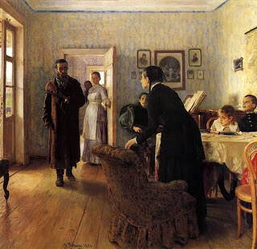

Bava Batra 147 - Explaining the Intentions in a Will

The intentions of a seriously ill person are assessed and then followed . This is the opinion of Rabbi Shimon ben Menasya, as seen below.
One whose son had gone abroad and heard that his son died, and who wrote over all his possessions to others - and then his son came back - his gift is nevertheless valid, the assessment of his mind being irrelevant. Rabbi Shimon ben Menasya says, "His gift is not valid, because if he would have known that his son was alive, who would not have made the gift."
All agree that if he said "I was under impression that I had a son, but now I discovered that I don't have a son, and my possessions shall go to so-and-so" - and then it was discovered that his son is alive - that his gift is not valid.
Art: И.Е.Репин - Не ждали! - Repin - They did not expect him